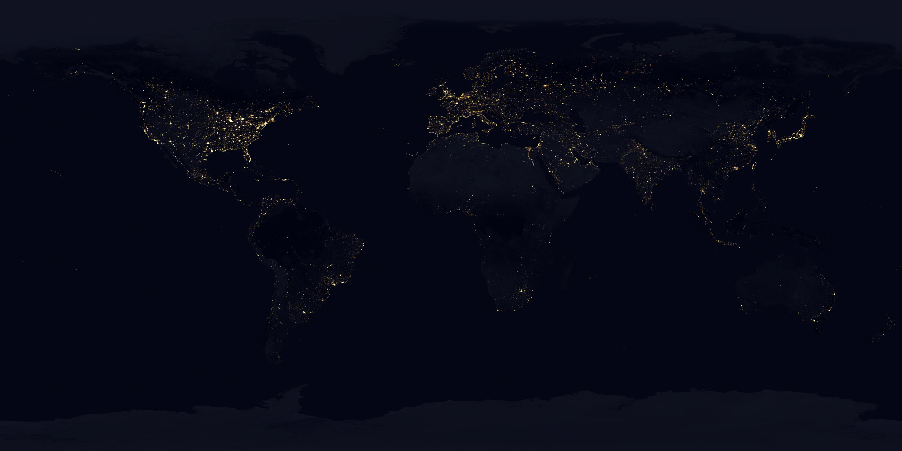
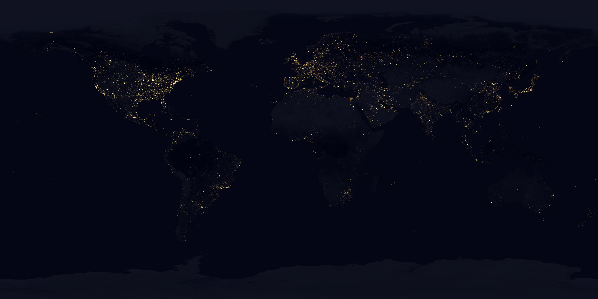

Our project presents an immersive, real-time scattering atmosphere simulation in the Unity game engine, leveraging the visual depth and precision of GLSL shaders to create photorealistic atmospheric effects. The project models procedural planets using Blender, which are subsequently imported into Unity for a seamless integration with the overall system. In addition, a comprehensive celestial movement system is implemented through C# scripting, simulating authentic planetary motion around the sun and rotation. To complement this, we have also incorporated an exploratory spaceship feature, designed to traverse this expansive space, providing the user with the opportunity to closely explore the crafted planets and their respective atmospheres.
Text
Point
Our procedural planet development process was largely inspired by the tutorial provided by Michele Vidulis, although we decided to omit certain aspects such as the atmosphere, clouds, trees, and more complex textures for the sake of simplicity.
For land creation, we started with a basic sphere and applied a noise algorithm, which was then subtracted from the original sphere. This resulted in a varied terrain shape on the surface of our planet. The noise function used in this process has multiple parameters, including resolution, scale, and depth, which can be adjusted to form different types of land surfaces.
The oceanic part of the planet is a completely separate entity, which we created from a box mesh and a subdivision surface. This method gives us a better polygon distribution compared to a UV sphere when we create the ocean material.

To complete the ocean, we implemented an ocean shader. The ocean and the continents are joined using a join geometry operation. We then added a proximity node, using the continents sphere as the target. We stored the resulting proximity mask in a variable called "ocean depth". This whole process produced a convincing representation of an ocean on the planet.
Initially, the aim was to create a more realistic representation of planets. High definition textures of Earth were identified for this purpose. Interestingly, nighttime textures were also available, sparking the idea of incorporating a day-night cycle. Each texture could be utilized depending on the lighting conditions.
 

The day-night cycle is controlled using a shader "Custom/EarthShader" that processes both daytime and nighttime textures based on the direction of light. This shader employs two primary functions: a vertex shader and a fragment shader.
The vertex shader, "vert", transforms the vertex position to clip space, passes through the texture coordinates, transforms the normal vector to world space, calculates world space position, calculates direction towards the light source, and calculates direction towards the viewer.
The fragment shader, "frag", then samples both daytime and nighttime textures. It calculates the diffuse lighting factor to smoothly transition between day and night. This factor is used to linearly interpolate between the night and day color.
When on the darker side of the object, emission is calculated based on the nighttime texture's green channel and light brightness. Emission is rendered as emissive objects with a color varying from yellowish to whitish, depending on the intensity of the lights. This mimics the look of city lights as seen from space at night.
The shader checks each pixel on the dark side of the texture to determine if it represents a light source. If it does, the shader renders the pixel as an emissive object, with its color depending on the intensity of the light. This results in a gradient from white (for more intense lights) to yellow (for less intense lights).
By utilizing these methods, the shader creates a dynamic visual effect that provides the player with a more realistic and immersive experience of day-night cycles and the intensity of city lights on Earth.
To simulate gravity, we use Newton's Universal Law of Gravitation:
This equation is applied in the ApplyGravity() function. The direction and
magnitude of the gravitational force are calculated and applied to the Rigidbody of the planet.
We simplify this model by assuming that the gravitational interaction is only significant between the sun and the individual planet. This allows us to overlook the relatively minor effects of the planets on each other's movements.
Furthermore, we have implemented an option to adjust the eccentricity of the orbit. This eccentricity value is used in the
SetInitialOrbitalVelocity() function to set the initial speed of the planet, allowing for non-circular (elliptical) orbits.
We also have an option that automatically sets the planet into a stable orbit, if possible. This is accomplished by setting the initial velocity of the planet such that the gravitational pull from the sun is balanced by the centripetal force required for a circular orbit.
Finally, the rotation of the planet around its axis is set up in the Start() function. Here, we assign an angular
velocity to the planet's Rigidbody based on the specified rotational speed.
The spaceship controller script is used to simulate the flight mechanics of a spaceship in the game environment.
The spaceship is controlled through keyboard input. The keys W and S are used to move the spaceship forward and
backward, respectively. Likewise, the keys A and D are used to move the spaceship to the left and right,
respectively. These controls are handled in the FixedUpdate() function of the script.
In addition to the linear movement, the spaceship's orientation is controlled by the mouse's movements on the X
and Y axes. This gives the player the ability to look around the spaceship's cockpit and control its pitch and
yaw. These controls are also handled in the FixedUpdate() function of the script.
The speed of the spaceship is controlled using acceleration. The desired velocity is determined based on the input controls, then the current velocity is interpolated towards this desired velocity at a rate determined by the acceleration. This results in smooth movement and changes in speed.
As the spaceship speeds up, the field of view of the spaceship's camera is increased to give the effect of rushing past the environment. This is done by linearly interpolating between a minimum and maximum field of view based on the spaceship's speed. When the spaceship is at its maximum speed, the field of view is at its maximum. Conversely, when the spaceship is at a standstill, the field of view is at its minimum. This creates a dynamic visual effect that provides the player with a sense of speed and movement.
All of these mechanics are initialized in the Start() function, where the Rigidbody and Camera
components of the spaceship are retrieved, and the cursor is hidden and locked to the center of the screen for
optimal control.

[1] Nishita 1993, Display of The Earth Taking into Account Atmospheric Scattering -http://nishitalab.org/user/nis/cdrom/sig93_nis.pdf
[2] O’Neil, Accurate Atmospheric Scattering - https://developer.nvidia.com/gpugems/gpugems2/part-ii-shading-lighting-and-shadows/chapter-16-accurate-atmospheric-scattering
[3] Bruneton & Neyret 2008, Precomputed Atmospheric Scattering - https://hal.inria.fr/inria-00288758/document
[4] Angular Diameter - https://www.astronomy.swin.edu.au/cosmos/A/Angular+Diameter
[5] A Qualitative and Quantitative Evaluation of 8 Clear Sky Models - https://arxiv.org/pdf/1612.04336.pdf
[6] Spectral rendering - https://en.wikipedia.org/wiki/Spectral_rendering
[7] Night/Day Earth and Sun textures - https://www.solarsystemscope.com/textures/